十四、回归的推断
译者：飞龙
自豪地采用谷歌翻译
到目前为止，我们对变量之间关系的分析纯粹是描述性的。我们知道如何找到穿过散点图的最佳直线来绘制。在所有直线中它的估计的均方误差最小，从这个角度来看，这条线是最好的。
但是，如果我们的数据是更大总体的样本呢？如果我们在样本中发现了两个变量之间的线性关系，那么对于总体也是如此嘛？它会是完全一样的线性关系吗？我们可以预测一个不在我们样本中的新的个体的响应变量吗？
如果我们认为，散点图反映了被绘制的两个变量之间的基本关系，但是并没有完全规定这种关系，那么就会出现这样的推理和预测问题。例如，出生体重与孕期的散点图，显示了我们样本中两个变量之间的精确关系；但是我们可能想知道，对于抽样总体中的所有新生儿或实际中的一般新生儿，这样的关系是否是真实的，或者说几乎是正确的。
一如既往，推断思维起始于仔细检查数据的假设。一组假设被称为模型。大致线性的散点图中的一组随机性的假设称为回归模型。
回归模型
简而言之，这样的模型认为，两个变量之间的底层关系是完全线性的；这条直线是我们想要识别的信号。但是，我们无法清楚地看到这条线。我们看到的是分散在这条线上的点。在每一点上，信号都被随机噪声污染。因此，我们的推断目标是将信号从噪声中分离出来。
更详细地说，回归模型规定了，散点图中的点是随机生成的，如下所示。
x和y之间的关系是完全线性的。我们看不到这个“真实直线”，但它是存在的。- 散点图通过将线上的点垂直移动，或上或下来创建，如下所示：
- 对于每个
x，找到真实直线上的相应点（即信号），然后生成噪声或误差。 - 误差从误差总体中带放回随机抽取，总体是均值为 0 的正态分布。
- 创建一个点，横坐标为
x，纵坐标为“x处的真实高度加上误差”。 - 最后，从散点图中删除真正的线，只显示创建的点。
基于这个散点图，我们应该如何估计真实直线？ 我们可以使其穿过散点图的最佳直线是回归线。 所以回归线是真实直线的自然估计。
下面的模拟显示了回归直线与真实直线的距离。 第一个面板显示如何从真实直线生成散点图。 第二个显示我们看到的散点图。 第三个显示穿过散点图的回归线。 第四个显示回归线和真实直线。
为了运行模拟，请使用三个参数调用draw_and_compare函数：真实直线的斜率，真实直线的截距以及样本量。
运行模拟几次，用不同的斜率和截距，以及不同的样本量。 因为所有的点都是根据模型生成的，所以如果样本量适中，你会看到回归线是真实直线的一个良好估计。
# The true line,
# the points created,
# and our estimate of the true line.
# Arguments: true slope, true intercept, number of points
draw_and_compare(4, -5, 10)
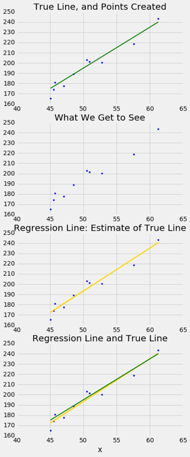
实际上，我们当然不会看到真实直线。 模拟结果表明，如果回归模型看起来合理，并且如果我们拥有大型样本，那么回归线就是真实直线的一个良好近似。
真实斜率的推断
我们的模拟表明，如果回归模型成立，并且样本量很大，则回归线很可能接近真实直线。 这使我们能够估计真实直线的斜率。
我们将使用我们熟悉的母亲和她们的新生儿的样本，来开发估计真实直线的斜率的方法。 首先，我们来看看我们是否相信，回归模型是一系列适当假设，用于描述出生体重和孕期之间的关系。
correlation(baby, 'Gestational Days', 'Birth Weight')
0.40754279338885108
总的来说，散点图看起来相当均匀地分布在这条线上，尽管一些点分布在主云形的周围。 相关系数为 0.4，回归线斜率为正。
这是否反映真实直线斜率为正的事实？ 为了回答这个问题，让我们看看我们能否估计真实斜率。 我们当然有了一个估计：我们的回归线斜率。 这大约是 0.47 盎司每天。
slope(baby, 'Gestational Days', 'Birth Weight')
0.46655687694921522
但是如果散点图出现的方式不同，回归线会有所不同，可能会有不同的斜率。 我们如何计算，斜率可能有多么不同？
我们需要点的另一个样本，以便我们可以绘制回归线穿过新的散点图，并找出其斜率。 但另一个样本从哪里得到呢？
你猜对了 - 我们将自举我们的原始样本。 这会给我们自举的散点图，通过它我们可以绘制回归线。
自举散点图
我们可以通过对原始样本带放回地随机抽样，来模拟新样本，它的次数与原始样本量相同。 这些新样本中的每一个都会给我们一个散点图。 我们将这个称为自举散点图，简而言之，我们将调用整个过程来自举散点图。
这里是来自样本的原始散点图，以及自举重采样过程的四个复制品。 请注意，重采样散点图通常比原始图稀疏一点。 这是因为一些原始的点没有在样本中被选中。
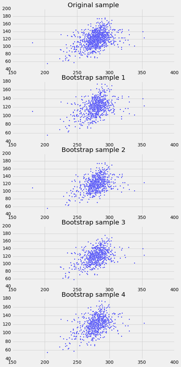
估计真实斜率
我们可以多次自举散点图，并绘制穿过每个自举图的回归线。 每条线都有一个斜率。 我们可以简单收集所有的斜率并绘制经验直方图。 回想一下，在默认情况下，sample方法带放回地随机抽取，次数与表中的行数相同。 也就是说，sample默认生成一个自举样本。
slopes = make_array()
for i in np.arange(5000):
bootstrap_sample = baby.sample()
bootstrap_slope = slope(bootstrap_sample, 'Gestational Days', 'Birth Weight')
slopes = np.append(slopes, bootstrap_slope)
Table().with_column('Bootstrap Slopes', slopes).hist(bins=20)
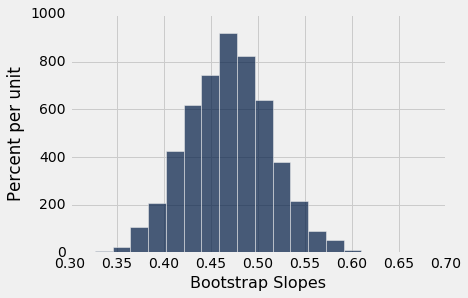
然后，我们可以使用percentile方法，为真实直线的斜率构建约 95% 置信区间。 置信区间从 5000 个自举斜率的第 2.5 百分位数，延伸到第 97.5 百分位数。
left = percentile(2.5, slopes)
right = percentile(97.5, slopes)
left, right
(0.38209399211893086, 0.56014757838023777)
用于自举斜率的函数
让我们收集我们估计斜率的方法的所有步骤，并定义函数bootstrap_slope来执行它们。 它的参数是表的名称，预测变量和响应变量的标签，以及自举复制品的所需数量。 在每个复制品中，该函数自举原始散点图并计算所得回归线的斜率。 然后绘制所有生成的斜率的直方图，并打印由斜率的“中间 95%”组成的区间。
def bootstrap_slope(table, x, y, repetitions):
# For each repetition:
# Bootstrap the scatter, get the slope of the regression line,
# augment the list of generated slopes
slopes = make_array()
for i in np.arange(repetitions):
bootstrap_sample = table.sample()
bootstrap_slope = slope(bootstrap_sample, x, y)
slopes = np.append(slopes, bootstrap_slope)
# Find the endpoints of the 95% confidence interval for the true slope
left = percentile(2.5, slopes)
right = percentile(97.5, slopes)
# Slope of the regression line from the original sample
observed_slope = slope(table, x, y)
# Display results
Table().with_column('Bootstrap Slopes', slopes).hist(bins=20)
plots.plot(make_array(left, right), make_array(0, 0), color='yellow', lw=8);
print('Slope of regression line:', observed_slope)
print('Approximate 95%-confidence interval for the true slope:')
print(left, right)
当响应变量为出生体重，预测变量为孕期时，我们调用bootstrap_slope来找到真实斜率的置信区间，我们得到了一个区间，非常接近我们之前获得的东西：大约 0.38 到 0.56 盎司每天。
bootstrap_slope(baby, 'Gestational Days', 'Birth Weight', 5000)
Slope of regression line: 0.466556876949
Approximate 95%-confidence interval for the true slope:
0.378663152966 0.555005146304
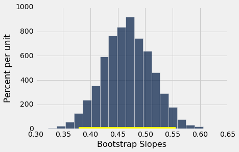
现在我们有一个函数，可以自动完成估计在回归模型中展示斜率的过程，我们也可以在其他变量上使用它。
例如，我们来看看出生体重与母亲身高的关系。 更高的女性往往有更重的婴儿吗？
回归模型似乎是合理的，基于散点图，但相关性不高。 这只有大约 0.2。
scatter_fit(baby, 'Maternal Height', 'Birth Weight')
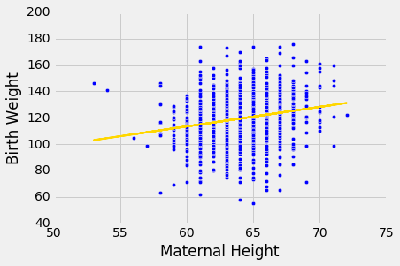
correlation(baby, 'Maternal Height', 'Birth Weight')
0.20370417718968034
像之前一样，我们使用bootstrap_slope来估计回归模型中真实直线的斜率。
bootstrap_slope(baby, 'Maternal Height', 'Birth Weight', 5000)
Slope of regression line: 1.47801935193
Approximate 95%-confidence interval for the true slope:
1.0403083964 1.91576886223
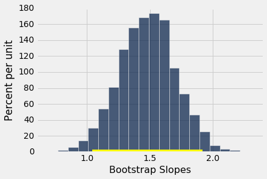
真实斜率的 95% 置信区间，从约 1 延伸到约 1.9 盎司每英寸。
真实斜率可能为 0 嘛？
假设我们相信我们的数据遵循回归模型，并且我们拟合回归线来估计真实直线。 如果回归线不完全是平的，几乎总是如此，我们将观察到散点图中的一些线性关联。
但是，如果这种观察是假的呢？ 换句话说，如果真实直线是平的 - 也就是说，这两个变量之间没有线性关系 - 我们观察到的联系，只是由于从样本中产生点的随机性。
这是一个模拟，说明了为什么会出现这个问题。 我们将再次调用draw_and_compare函数，这次要求真实斜率为 0。我们的目标是，观察我们的回归线是否显示不为 0 的斜率。
请记住函数draw_and_compare的参数是真实直线的斜率和截距，以及要生成的点的数量。
draw_and_compare(0, 10, 25)
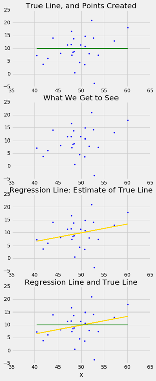
运行模拟几次，每次保持真实直线的斜率为 0 。你会注意到，虽然真实直线的斜率为 0，但回归线的斜率通常不为 0。回归线有时会向上倾斜，有时会向下倾斜，每次都给我们错误的印象，即这两个变量是相关的。
为了确定我们所看到的斜率是否真实，我们想测试以下假设：
原假设。真实直线的斜率是 0。
备选假设。真实直线的斜率不是 0。
我们很有条件来实现它。由于我们可以为真实斜率构建一个 95% 的置信区间，我们所要做的就是看区间是否包含 0。
如果没有，那么我们可以拒绝原假设（P 值为 5% 的截断值）。
如果真实斜率的置信区间确实包含 0，那么我们没有足够的证据来拒绝原假设。也许我们看到的斜率是假的。
我们在一个例子中使用这个方法。假设我们试图根据母亲的年龄来估计新生儿的出生体重。根据样本，根据母亲年龄估计出生体重的回归线的斜率为正，约为 0.08 盎司每年。
slope(baby, 'Maternal Age', 'Birth Weight')
0.085007669415825132
虽然斜率为正，但是很小。 回归线非常接近平的，这就产生了一个问题，真实直线是否是平的。
scatter_fit(baby, 'Maternal Age', 'Birth Weight')
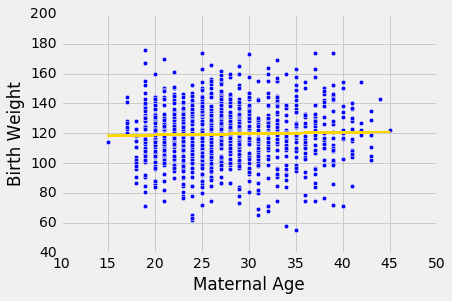
我们可以使用bootstrap_slope来估计真实直线的斜率。 计算表明，真实斜率的约 95% 的自举置信区间左端为负，右端为正 - 换句话说，区间包含 0。
bootstrap_slope(baby, 'Maternal Age', 'Birth Weight', 5000)
Slope of regression line: 0.0850076694158
Approximate 95%-confidence interval for the true slope:
-0.104335243815 0.272791852339
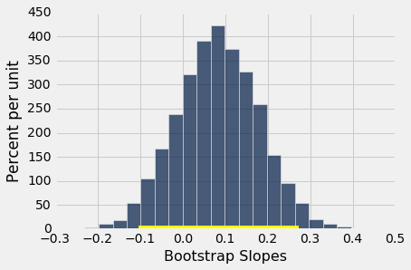
因为区间包含 0，所以我们不能拒绝原假设，母亲年龄与新生儿出生体重之间的真实线性关系的斜率为 0。基于此分析，使用母亲年龄作为预测变量，基于回归模型预测出生体重是不明智的。
预测区间
回归的主要用途之一是对新个体进行预测，这个个体不是我们原始样本的一部分，但是与样本个体相似。在模型的语言中，我们想要估计新值x的y。
我们的估计是真实直线在x处的高度。当然，我们不知道真实直线。我们使用我们的样本点的回归线来代替。
给定值x的拟合值，是基于x值的y的回归估计。换句话说，给定值x的拟合值就是回归线在x处的高度。
假设我们试图根据孕期天数来预测新生儿的出生体重。我们在前面的章节中看到，这些数据非常适合回归模型，真实直线的斜率的 95% 置信区间不包含 0。因此，我们的预测似乎是合理的。
下图显示了预测位于回归线上的位置。红线是x = 300。
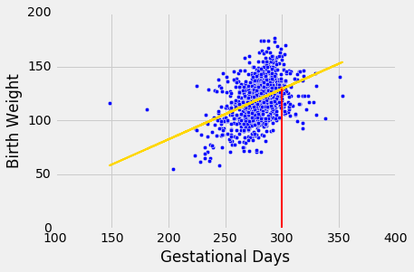
红线与回归线的相交点的高度是孕期天数 300 的拟合值。
函数fitted_value计算这个高度。像函数的相关性，斜率和截距一样，它的参数是表的名称和x和y的列标签。但是它也需要第四个参数，即x的值，在这个值上进行估算。
def fitted_value(table, x, y, given_x):
a = slope(table, x, y)
b = intercept(table, x, y)
return a * given_x + b
孕期天数 300 的拟合值约为 129.2 盎司。 换句话说，对于孕期为 300 天的孕妇，我们估计的新生儿体重约为 129.2 盎司。
fit_300 = fitted_value(baby, 'Gestational Days', 'Birth Weight', 300)
fit_300
129.2129241703143
预测的可变性
我们已经开发了一种方法，使用我们样本中的数据，根据孕期天数预测新生儿的体重。 但作为数据科学家，我们知道样本可能有所不同。 如果样本不同，回归线也会不一样，我们的预测也是。 为了看看我们的预测有多好，我们必须了解预测的可变性。
为此，我们必须生成新的样本。 我们可以像上一节那样，通过自举散点图来实现。 然后，我们为每个散点图的复制品拟合回归线，并根据每一行进行预测。 下图显示了 10 条这样的线，以及孕期天数 300 对应的出生体重预测。
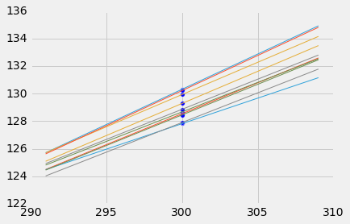
lines
| slope | intercept | prediction at x=300 |
|---|---|---|
| 0.503931 | -21.6998 | 129.479 |
| 0.53227 | -29.5647 | 130.116 |
| 0.518771 | -25.363 | 130.268 |
| 0.430556 | -1.06812 | 128.099 |
| 0.470229 | -11.7611 | 129.308 |
| 0.48713 | -16.5314 | 129.608 |
| 0.51241 | -23.2954 | 130.428 |
| 0.52473 | -27.2053 | 130.214 |
| 0.409943 | 5.22652 | 128.21 |
| 0.468065 | -11.6967 | 128.723 |
每一行的预测都不相同。 下表显示了 10 条线的斜率、截距以及预测。
自举预测区间
如果我们增加重采样过程的重复次数，我们可以生成预测的经验直方图。这将允许我们创建预测区间，使用为斜率创建自举置信区间时的相同的百分比方法。
让我们定义一个名为bootstrap_prediction的函数来实现。该函数有五个参数：
- 表的名称
- 预测变量和响应变量的列标签
- 用于预测的
x的值 - 所需的自举重复次数
在每次重复中，函数将自举原始散点图，并基于x的指定值查找y的预测值。具体来说，它调用我们在本节前面定义的函数fitted_value，来寻找指定x处的拟合值。
最后，绘制所有预测值的经验直方图，并打印由预测值的“中间 95%”组成的区间。它还打印基于穿过原始散点图的回归线的预测值。
# Bootstrap prediction of variable y at new_x
# Data contained in table; prediction by regression of y based on x
# repetitions = number of bootstrap replications of the original scatter plot
def bootstrap_prediction(table, x, y, new_x, repetitions):
# For each repetition:
# Bootstrap the scatter;
# get the regression prediction at new_x;
# augment the predictions list
predictions = make_array()
for i in np.arange(repetitions):
bootstrap_sample = table.sample()
bootstrap_prediction = fitted_value(bootstrap_sample, x, y, new_x)
predictions = np.append(predictions, bootstrap_prediction)
# Find the ends of the approximate 95% prediction interval
left = percentile(2.5, predictions)
right = percentile(97.5, predictions)
# Prediction based on original sample
original = fitted_value(table, x, y, new_x)
# Display results
Table().with_column('Prediction', predictions).hist(bins=20)
plots.xlabel('predictions at x='+str(new_x))
plots.plot(make_array(left, right), make_array(0, 0), color='yellow', lw=8);
print('Height of regression line at x='+str(new_x)+':', original)
print('Approximate 95%-confidence interval:')
print(left, right)
bootstrap_prediction(baby, 'Gestational Days', 'Birth Weight', 300, 5000)
Height of regression line at x=300: 129.21292417
Approximate 95%-confidence interval:
127.300774171 131.361729528
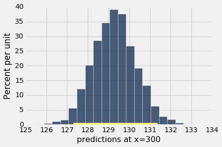
上图显示了基于 5000 次重复的自举过程，孕期天数 300 的预测出生体重的自举经验直方图。经验分布大致是正泰的。
我们已经通过预测的“中间 95%”，即预测的第 2.5 百分位数到第 97.5 百分位数的区间，构建了分数的约 95% 的预测区间。 区间范围从大约 127 到大约 131。基于原始样本的预测是大约 129，接近区间的中心。
改变预测变量的值的效果
下图显示了孕期天数 285 的 5,000 次自举预测的直方图。 基于原始样本的预测是约 122 盎司，区间范围从约 121 盎司到约 123 盎司。
bootstrap_prediction(baby, 'Gestational Days', 'Birth Weight', 285, 5000)
Height of regression line at x=285: 122.214571016
Approximate 95%-confidence interval:
121.177089926 123.291373304
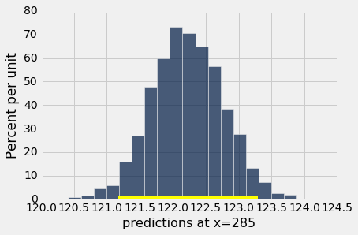
请注意，这个区间比孕妇天数 300 的预测区间更窄。 让我们来调查其原因。
孕妇天数均值约为 279 天：
np.mean(baby.column('Gestational Days'))
279.10136286201021
所以 285 比 300 更接近分布的中心。 通常，基于自举样本的回归线，在预测变量的分布中心附近彼此更接近。 因此，所有的预测值也更接近。 这解释了预测区间的宽度更窄。
你可以在下面的图中看到这一点，它显示了 10 个自举复制品中每一个的x = 285和x = 300的预测值。 通常情况下，直线在x = 300处比x = 285处相距更远，因此x = 300的预测更加可变。
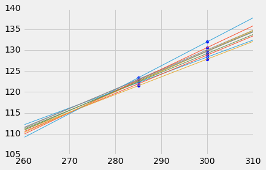
注意事项
我们在本章中进行的所有预测和测试，都假设回归模型是成立的。 具体来说，这些方法假设，散点图中的点由直线上的点产生，然后通过添加随机正态噪声将它们推离直线。
如果散点图看起来不像那样，那么模型可能不适用于数据。 如果模型不成立，那么假设模型为真的计算是无效的。
因此，在开始基于模型进行预测，或者对模型参数进行假设检验之前，我们首先要确定回归模型是否适用于我们的数据。 一个简单的方法就是，按照我们在本节所做的操作，即绘制两个变量的散点图，看看它看起来是否大致线性，并均匀分布在一条线上。 我们还应该使用残差图，执行我们在前一节中开发的诊断。